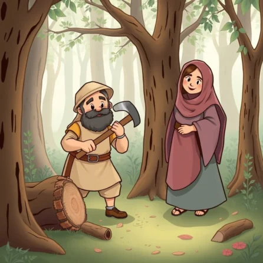
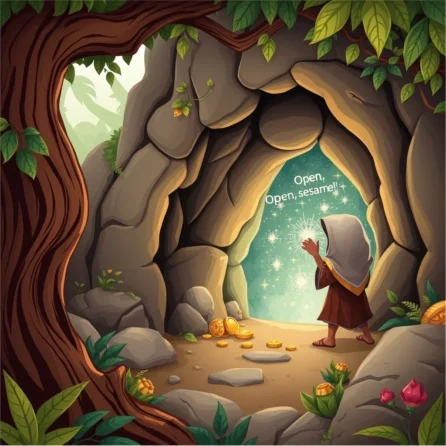
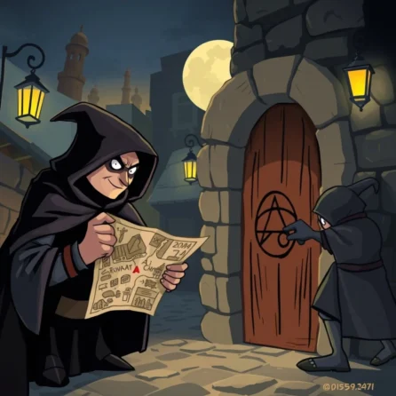
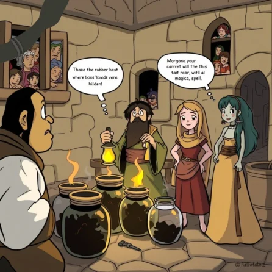

The Story
Ali Baba was a super kind man. He worked hard every day as a woodcutter. He had a great wife, who was just as nice as he was, but they didn’t have much money. Ali Baba had an older brother named Cassim. Cassim was very rich and always wanted more things. He was not very cheerful, either.
One sunny morning, Ali Baba was deep in the woods, chopping wood. CHOP! CHOP! Suddenly, he heard some rumbling noises and big, heavy voices! He was curious, but a little scared. He quickly climbed up a big, leafy tree and hid right in the middle, holding his breath.

He peeked down and saw about forty men! They were big, tough-looking robbers, and they were carrying enormous sacks filled with stolen treasures. The leader stopped in front of a giant rock wall.
The leader yelled out loud, “Open, sesame!”

WHOOSH! The huge rock wall rolled away like a giant door! Ali Baba watched in amazement as the robbers went inside to hide their loot. After a long time, the leader came back out and shouted, “Close, sesame!” The rock wall slid shut, sealing the secrets inside.
Ali Baba waited until the robbers were far, far away. He slid down the tree and went right up to the wall. He was shaking with excitement! “Gosh, I hope I remember the words,” he whispered. Then he took a deep breath and shouted, “Open, sesame!”
The cave opened! Inside, everything sparkled. There were huge stacks of gold coins and shiny jewels. But Ali Baba only took a little bit, just what he could carry, because he was still a kind and honest man.
He hurried home, but he needed to measure the gold to see how much it was. He went to his greedy brother Cassim and asked to borrow a measuring cup.
Cassim’s clever helper, Morgana, handed over the cup. But she thought, Hmm, why does a woodcutter need to measure something? She quickly put a little bit of sticky honey inside the cup. She just knew it would catch a clue!
When Ali Baba brought the cup back, Morgana looked. “Oh my goodness!” she gasped. Stuck to the honey was a tiny, tiny piece of gold! Morgana quickly ran to Cassim. “Boss, you won’t believe it! Ali Baba was measuring gold!”
Cassim’s eyes went wide. “Gold?! Where is it? I have to have it all!” His greed was like a big, hot fire. He didn’t ask Ali Baba nicely; he forced the secret out of him and ran straight to the cave!
He shouted the magic words, and the cave opened. Cassim saw mountains of treasure and went crazy! He frantically stuffed his biggest bag full of shining gold.
When the bag was bursting, he turned to leave. But wait! He panicked. “Open, uh… open, bean?” Nothing. He tried again, his face getting red. “Open, pea? Open, carrot?” He totally forgot the words! His heart hammered in his chest. He was trapped.
It wasn’t long before the mean robbers came back. They found Cassim sitting sadly in their cave. Boy, were they mad! They grabbed Cassim right away.
When Cassim didn’t come home, Morgana worried. She went to Ali Baba. “I think Cassim went to the cave,” she told him. Ali Baba felt terrible. He rushed back and found his poor brother. He was heartbroken.
The robbers came back later and saw that Cassim was gone. “Someone knows our secret!” shouted the leader. They sent one robber to find Ali Baba’s house and put a secret chalk mark on the door.

But the sharp-eyed Morgana saw the mark! She quickly grabbed a piece of chalk and put the exact same mark on every house in the neighborhood! When the robbers came back that night, they got totally confused. “Which house is it? They all have the mark!” The leader was furious and punished the robber for making a mistake.
The next day, the leader came up with a very sneaky plan. He dressed up like an oil merchant and showed up at Ali Baba’s house, pretending to be tired. “I’m so exhausted. Could I please rest here tonight with my big oil jars?”
Ali Baba, being kind, said, “Of course! Come on in.” But those jars didn’t hold oil; they held the other robbers! They were hidden, ready to jump out and hurt Ali Baba in the middle of the night.
While Ali Baba was resting, Morgana was making dinner. She walked past the big jars and noticed something funny—a little sound, like a sneeze! She leaned in close to one jar, then another. She saw a small shadow move!
She gasped, but kept very quiet. “Oh, wow! Those sneaky guys are hiding in the jars! I have to do something fast!” She was incredibly brave. She heated up a huge cauldron of oil until it was bubbling hot. Then, she quickly poured that steaming hot oil right into every single jar!

Later, the leader checked his robbers. He found them all very hurt and unable to help him. He roared with anger and ran at Ali Baba! But Morgana was ready. She jumped between them and fought the Chief Robber, forcing him to run away forever!
Ali Baba was so amazed and grateful. “Morgana! You saved my life! You are the cleverest, bravest person I know!”
Because of Morgana’s amazing courage, Ali Baba, his wife, and their child were safe and happy. Ali Baba gave Morgana her freedom, and they shared the vast, sparkling treasure with all the poor people in town. Ali Baba never had to cut wood again, and he lived happily and contentedly.
The Moral of the Story
This story teaches us that being kind and helpful, like Ali Baba, is much better than being greedy, like Cassim. And best of all, cleverness and bravery, like Morgana showed, can save the day! You don’t need magic words to be a hero—just smart thinking and a good heart!